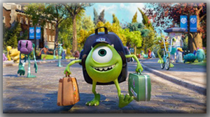
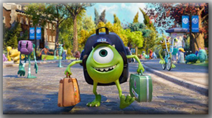
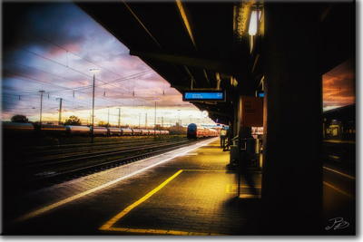
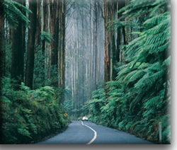

Хватит валяться на диване в свободное от работы время и делать забеги от телевизора к холодильнику!  В мире столько мест, где ты не был, но еще можешь побывать. Ведь нужно хоть иногда вырываться из душных стен квартиры и путешествовать, искать приключения! В скольких странах ты был? А в скольких не был? Имеешь ли ты хоть малейшее представление о том как прекрасны и бескрайни просторы страны, в которой ты живешь? Удивительные памятники, здания, шедевры природы и рук человека могут находиться прямо в твоем городе. А ты всё еще смотришь на унылую многоэтажку за окном! Пора действовать, двигаться, развиваться, нужно прожить жизнь и получить максимум впечатлений. Какие чудеса скрывает наша замечательная планета, сколько чудесного ждет тебя за порогом!
В мире столько мест, где ты не был, но еще можешь побывать. Ведь нужно хоть иногда вырываться из душных стен квартиры и путешествовать, искать приключения! В скольких странах ты был? А в скольких не был? Имеешь ли ты хоть малейшее представление о том как прекрасны и бескрайни просторы страны, в которой ты живешь? Удивительные памятники, здания, шедевры природы и рук человека могут находиться прямо в твоем городе. А ты всё еще смотришь на унылую многоэтажку за окном! Пора действовать, двигаться, развиваться, нужно прожить жизнь и получить максимум впечатлений. Какие чудеса скрывает наша замечательная планета, сколько чудесного ждет тебя за порогом!
Молодой американец Эрик Ким, вернувшись из 30тидневного самостоятельного путешествия по Европе, поделился своими наблюдениями, которые являются очень ценными советами для тех, кто пока только планирует отправиться исследовать новые горизонты.
1. Путешествуйте налегке.
Нет ничего хуже, чем перемещаться с тяжестью за плечами, когда вы просто хотите насладиться моментом.
2. Экономьте, но периодически обязательно балуйте себя.
Не стоит выбрасывать по 20 долларов на каждую трапезу, но время от времени не жалейте денег на то, чтобы насладиться местной кухней.
3. Разговаривайте на местном языке.
Возможно, вы переживаете, что исковеркаете слова на чужом языке и подвергнетесь критике, однако дела обстоят с точностью наоборот. Людям нравится, когда иностранцы пытаются понять их культуру, и реагируют на это очень тепло – в независимости от того, насколько чудовищен ваш акцент.
4. Планируйте, но не слишком много.
Когда вы путешествуете, неплохо быть уверенным в том, что ночью у вас точно будет крыша над головой. С другой стороны, спонтанность – одна из самых ярких составляющих путешествия. Когда вы прибываете на новое место, просто обзаведитесь картой и поспрашивайте местных о лучших достопримечательностях. Остальное предоставьте судьбе.
5. Не бойтесь.
Страх – вот что не дает людям путешествовать в первую очередь. На пути к поездке в сознании человека возникают тысячи вопросов «А что, если…». «
А что, если у меня закончатся деньги?», «А что, если меня ограбят», «А что, если поездка мне не понравится». До определенной степени все эти заботы имеют право на существования, однако большинство страшных случаев, произошедших с путешественниками, на самом деле, просто раздуты СМИ. Многие люди умирают, так ни разу и не покинув своей страны. Вы же не хотите сожалеть об этом на смертном одре? Так соберитесь духом и отправляйтесь навстречу приключениям!
6. Заводите друзей.
Когда я прогоняю в памяти свои путешествия, лучшие мои воспоминания связаны не с местами, которые я увидел, а с людьми, которых мне довелось повстречать. Уделите время тому, чтобы подружиться с другими путешественниками или местными жителями. Я не перестаю удивляться тому, как сильно я повзрослел, узнавая все больше о сходствах и различиях между людьми.
7. Лучше проводить больше времени в меньших местах, чем посетить больше мест за меньшее время.
Путешествие – это чрезвычайно утомительно. Когда вы в пути, вам нечасто выдается возможность присесть и перевести дух. Так что, путешествуя, лучше поберечь энергию и позволить себе как следует проникнуться окружающей средой, вместо того, чтобы стремиться увидеть так много, насколько это возможно. Последнее приведет вас к переутомлению, что, в свою очередь, превратит путешествие в рутину вместо удовольствия.
8. Отдыхайте как следует.
Если вы не позволите себе достаточно отдыха вовремя путешествия, то вы будете несчастны. Лучше уж начать день попозже и сделать меньше вещей, чем проснуться ни свет, ни заря, когда у вас все равно не будет энергии на выполнение всей программы.
9. Наедайтесь.
Когда вы путешествуете, вы превращаетесь в аппарат по сжиганию калорий. Не стесняйтесь как следует набивать живот во время поездки и не беспокойтесь о таких мелочах, как сахар или жиры. Даже если вы будете поглощать чудовищное количество еды, у вас все равно будут все шансы вернуться домой значительно похудевшим.
10. Вложитесь в хороший рюкзак.
Да, это правда, что подходящий рюкзак может обойтись вам больше, чем в сотню долларов, но, скорее всего, он действительно будет стоить этих денег. Качественный рюкзак должен быть водонепроницаем, с надежными швами и молниями и удобен для спины. Если же вы захотите сэкономить, то, скорее всего, ваша спина возненавидит вас за это решение. 
11. Фотографируйте, но не все время.
Если вы путешествуете в первый раз, то, скорее всего, вам захочется запечатлеть каждую мелочь, которая повстречается на вашем пути. Хотя привезти из поездки массу воспоминаний – это замечательно, очень важно действительно наслаждаться путешествием, вместо того, чтобы пытаться задокументировать каждую ее секунду. Бывают вещи, которыми лучше наслаждаться без фотоаппарата в руке.
12. Путешествуйте в одиночку.
Многие говорят, что это лучший способ путешествовать. Дело не только в том, что у вас будет время на то, чтобы понять самого себя; помимо прочего, вы будете буквально вынуждены знакомиться с другими людьми. Находиться далеко от дома и чувствовать себя анонимным незнакомцем – сюрреалистическое ощущение, который каждый должен пережить хотя бы однажды. Пожалуй, самые яркие моменты самосознания я ощущал в те недели, когда путешествовал один.
13. Путешествуйте с другом.
Несмотря на предыдущее утверждение, путешествовать с другом (или с двумя друзьями) – это тоже прекрасно. У вас появятся воспоминания, принадлежащие только вам двоим, и которыми вы сможете делиться еще долгое время после окончания поездки. Кроме это, это выгодно в финансовом плане: ведь вы будете делить траты на жилье, еду и другие расходы. А еще у вас есть все шансы максимально сблизиться и пробыть отличными друзьями всю оставшуюся жизнь!
14. Ведите дневник.
Я лично очень рад сейчас, что придерживался этого правила. Пускай во время поездки это зачастую казалось рутиной, и писать было нелегко – возможность пролистать дневник и погрузиться в воспоминания того стоит! Кроме того, нет лучшего способа перевести дух после долгого дня, чем записывать свои мысли, чувства и пережитые приключения.
15. Для того, чтобы путешествовать, не нужно быть богатым.
Хотя во время своего первого путешествия я и был обычным студентом, я все равно не позволил своему финансовому положению помешать мне увидеть мир. Хотите путешествовать? Откажите себе в отдельных вещах, займите в долг, подзаработайте. В конце концов, самостоятельная поездка – это не так уж и дорого. Если вы действительно хотите путешествовать – вы в любом случае будете это делать.
16. Музеи выматывают и физически, и морально.
Нет, я не пытаюсь отговорить вас от посещения музеев, особенно если речь идет о Европе. В Европе находятся лучшие музеи мира с величайшими шедеврами в истории. Но, тем не менее, походы среди застывших экспонатов отнимают множество времени и энергии. Пытаться осмотреть больше одного музея в день – это слишком самонадеянно. Да и даже один музей, если обойти все его экспозиции, может быть перебором.
17. Сверните с протоптанной дорожки. 
Да, конечно, традиционные туристические направления могут быть очень милы, однако самые красивые места, которые мне довелось повидать, были не раскрученными достопримечательностями, а скорее, спрятанными жемчужинами, на которые я наткнулся чисто интуитивно. Так что не стремитесь все время гулять среди популярных мест, а позвольте вашему любопытству завести вас в загадочные аллеи, через странные мосты и неизведанные проходы. Раскройте в себе ребенка.
18. Позвольте себе пропускать то, что вам не интересно
Не вынуждайте себя делать то, что вас не интересует. Например, если вы оказываетесь в каком-нибудь знаменитом месте, и оно нисколько вас не трогает, то никто вас не заставляет там находиться! То, что для других – сокровище, для вас вполне может быть чем-то непримечательным: это нормально.
19. Не стесняйтесь просить о помощи.
Давайте признаем: во время путешествия вы рискуете теряться куда чаще, чем однажды. Вместо того, чтобы беспокоиться, что вас заклеймят как «заблудившегося туриста», отбросьте гордость и попросите о помощи. Это просто удивительно, с каким удовольствием люди могут помогать другим!
20. Улыбайтесь
Не важно, разговариваете ли вы с менеджером в хостеле или со случайным прохожим на улице – улыбайтесь настолько часто, насколько это возможно. Когда вы улыбаетесь, вы тут же начинаете казаться окружающим более приятным, что может привести к интересной беседе или знакомству. Вы будете удивлены тому, как далеко может завести простая улыбка незнакомцу на улице!
21. Дом там, где сердце.
После моего 30тидневного путешествия по Европе я проникся еще более глубокой любовью к дому. Хотя я и гулял по лучшим музеям мира, любовался удивительными старинными церквями и обедал экзотическими блюдами, я понял, что большая часть вещей, которыми я наслаждался заграницей, доступна прямо у меня дома. Нет, я вовсе не пытаюсь отговорить кого-либо от путешествия. Напротив – одна из главных причин, по которым я убеждаю людей отправиться в путь – это то, что, когда вы вернетесь со свежей головой, вы начнете больше ценить то, что у вас есть. Вернувшись домой, обязательно подробно расскажите вашей семье и друзьям о вашем путешествии, и не забудьте обнять их и сказать им, как сильно вы их любите.
Кириллова Ольга 2013 ©